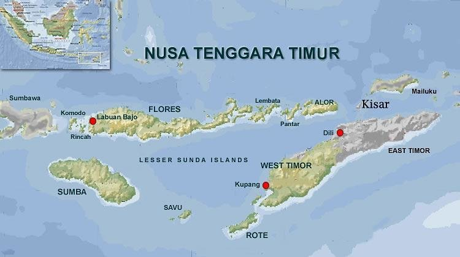
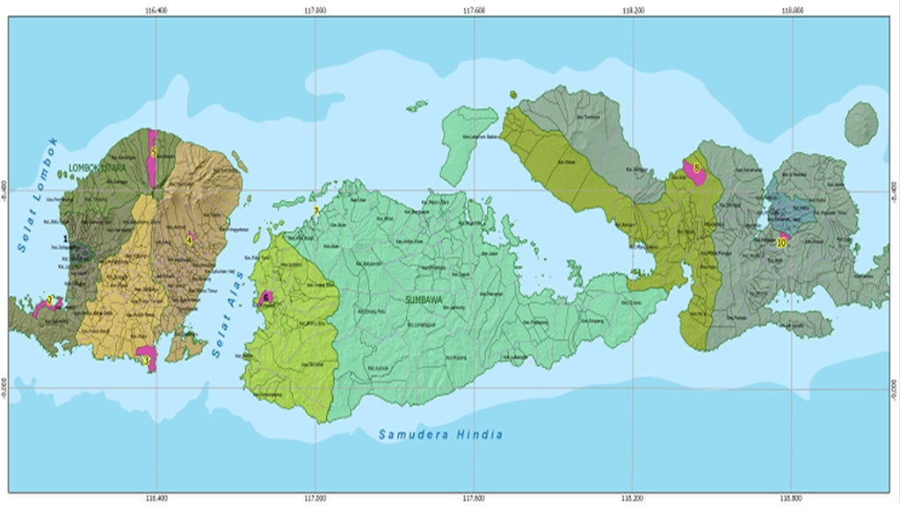
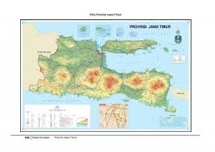
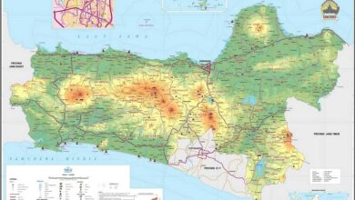
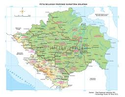
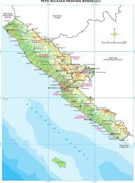
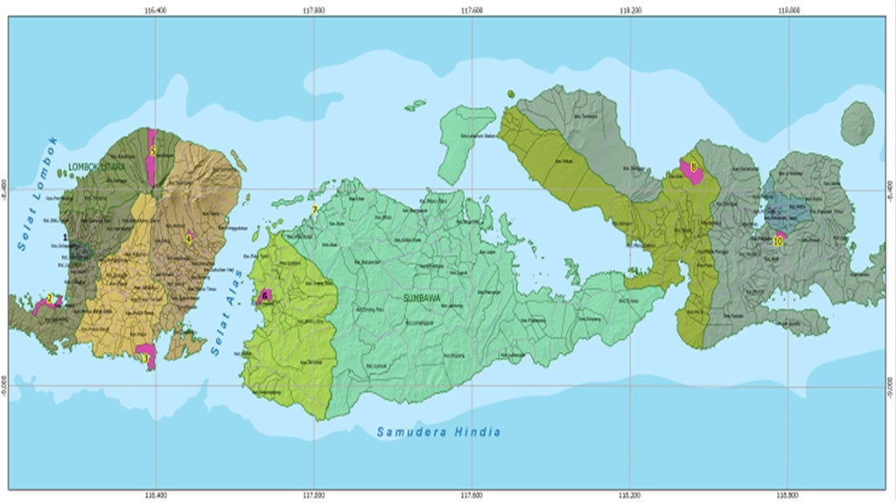

Pengertian
Kemarau adalah musim kering yang terjadi di suatu wilayah, ditandai dengan curah hujan yang sangat rendah atau hampir tidak ada sama sekali selama periode waktu tertentu. Masa ini biasanya berlangsung beberapa bulan dan mempengaruhi kondisi lingkungan serta aktivitas manusia.
Seberapa Bahaya Kemarau di Indonesia?
Kemarau di Indonesia bukan sekadar musim kering biasa. Musim kemarau yang berkepanjangan telah menjadi ancaman serius bagi kehidupan masyarakat dan lingkungan. Beban ekonomi yang timbul dari kemarau dapat menyebabkan kesulitan bagi banyak keluarga petani dan masyarakat yang menggantungkan hidup pada sumber daya alam.
Penting bagi kita semua untuk memahami bahaya kemarau dan menyiapkan langkah-langkah adaptasi dan mitigasi. Dengan cara ini, kita dapat meminimalisir kerusakan dan menjaga lingkungan serta kesejahteraan masyarakat Indonesia.
Penyebab Terjadinya Musim Kemarau
Musim kemarau terjadi akibat berbagai faktor dari aspek alam dan manusia, antara lain:
- Faktor Alam dan Iklim: Angin musim timuran yang membawa udara kering dari daratan Asia menyebabkan berkurangnya curah hujan di Indonesia pada periode kemarau.
- Fenomena Alam Global: Peristiwa El Niño yang menyebabkan suhu permukaan laut di Samudra Pasifik bagian tengah dan timur meningkat, akibatnya pola hujan di Indonesia terganggu dan menyebabkan kemarau lebih panjang.
- Penggundulan Hutan: Aktivitas deforestasi yang masif mengurangi kemampuan hutan untuk menyimpan air dan mengatur kelembapan udara, memperparah kondisi kering saat kemarau.
- Perubahan Iklim: Dampak pemanasan global menyebabkan perubahan pola cuaca yang ekstrem, termasuk musim kemarau yang lebih intens dan lama.
- Pengelolaan Air yang Kurang Baik: Kurangnya sistem penyimpanan dan konservasi air yang efisien membuat kondisi kekeringan saat kemarau lebih parah.
Dampak
Kemarau yang berkepanjangan dapat menimbulkan berbagai dampak negatif, seperti:
- Kekeringan yang menyebabkan tanaman gagal panen.
- Krisis air bersih bagi masyarakat dan hewan.
- Meningkatnya risiko kebakaran hutan dan lahan.
- Gangguan terhadap kesehatan karena debu dan kelembapan rendah.
- Dampak ekonomi bagi petani dan masyarakat terdampak.
Waktu Terjadinya Kekeringan
Kemarau biasanya terjadi di Indonesia pada bulan Mei hingga September, tergantung wilayahnya. Pada periode ini, angin musim timuran membawa udara kering dari Asia daratan, sehingga curah hujan menurun drastis dan suhu cenderung meningkat.
Daerah dengan Efek Terburuk Kemarau
Beberapa daerah di Indonesia yang biasanya mengalami efek terburuk akibat musim kemarau panjang meliputi:
- Nusa Tenggara Timur (NTT)

- Nusa Tenggara Barat (NTB) 
- Jawa Timur 
- Jawa Tengah
- Sumatra Selatan 
- Bengkulu
 - Nusa Tenggara Barat (NTB) 
Apa yang Harus Dilakukan
Sebelum Kekeringan
- Mengumpulkan dan menyimpan air hujan dengan baik.
- Menyiapkan lahan dengan metode irigasi yang efisien.
- Meningkatkan kesadaran masyarakat akan pentingnya konservasi air.
- Menanam tanaman tahan kekeringan.
Sedang Kekeringan
- Mengurangi penggunaan air yang tidak penting dan hemat saat memakai air.
- Mengelola sumber daya air secara bijaksana dan mendistribusikan bantuan air bersih.
- Memantau kesehatan terutama bagi kelompok rentan (anak-anak, lansia).
- Mewaspadai risiko kebakaran hutan dan mengambil tindakan pencegahan.
Setelah Kekeringan
- Melakukan evaluasi kerusakan lingkungan dan pertanian.
- Mengembalikan pasokan air dan memperbaiki sumber air yang rusak.
- Melakukan penghijauan dan penanaman kembali tanaman yang layu.
- Menyiapkan langkah antisipasi dan kesiapsiagaan untuk musim kemarau berikutnya.
Biodata Kelompok
- Anggota 1
- Nama:Buwono Rifa'i
- Anggota 2
- Nama:Reza Asidqi